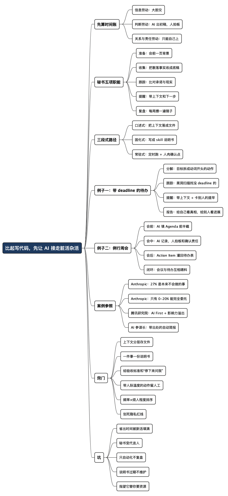

比起让 AI 写代码，我更想让它替我干些脏活杂活
Posted on 二 04 8月 2026 in AI
| Abstract | 比起让 AI 写代码，我更想让它替我干些脏活杂活 |
|---|---|
| Authors | Walter Fan |
| Category | AI / 职场方法论 |
| Version | v1.0 |
| Updated | 2026-08-04 |
| License | CC-BY-NC-ND 4.0 |
比起让 AI 写代码，我更想让它替我干些脏活杂活
先说我一个很普通的工作日长什么样。
上午两个会，一个是跨团队对齐，一个是评审；中间抽空回了十几条消息，帮两个同事定位问题；下午在两个系统里填表走流程，给上级准备一页汇报材料，然后追三个人的进度——有一个还没回；晚上七点多，终于打开 IDE，写了不到一小时的代码，改的是两天前就该改完的东西。
这不是特别糟的一天，这是相当典型的一天。
我入这行的初衷很朴素：喜欢琢磨设计，喜欢把代码写干净。可干到今天，一多半时间花在别的地方——走流程、做支持、开各种会、跟各个团队沟通、跟踪进度、反馈问题、找资源找支持。这些活谈不上有多难，就是碎、耗神、且必须由一个知道全局的人来干，所以躲不掉。
让 AI 写代码这件事，我当然也在做，还写过几篇专门聊它的文章——完全由 AI 生成的代码，我越看越心惊、AI 写得太快，肉眼看不过来。但说实话，它省下来的时间远不如我预期——因为我一天里能坐下来写代码的时间本来就不多，真正被吃掉的是写代码之前和之后的那一大堆事。
所以“超级个体”这件事，我的关注点跟很多人不太一样。大多数人问的是“AI 能不能替我写代码”，我更想问的是“AI 能不能替我干那些我不想干、又不得不干的活”——后者的存量大得多，而且几乎没人在认真管。
- 不指望它替我拍板，不指望它替我担责，也不指望它替我去跟人磨嘴皮子。
- 但我指望它帮我备料、收集、跟踪、提醒、复盘——把我的时间从搬运信息里赎回来，让我能把精力花在刀刃上。
- 这篇不谈概念，只谈路径：哪些活能交、哪些交不出去、怎么分三步走，中间用两个例子从头走到尾——一份带 deadline 的待办清单和一堆例行周会——最后是别人跑通的案例和我踩过的坑。
先把词解释一下，免得后面绕：Agent（智能体）在这篇里指的不是科幻片里的机器人，而是一个能听懂你的话、自己去调用工具查东西干活的 AI 程序；skill（技能）指你事先写好的一套办事说明书，AI 照着办，不用你每次从头交代。
一、先算一笔时间账：你的时间到底漏在哪
想让 AI 帮忙，得先说清楚要它帮什么。“帮我提效”这种话没法执行。
我的笨办法是先记三天账。不用什么工具，一张纸，四列：这件事叫什么、花了多久、是不是只有我能干、下次还会不会再来。三天下来你大概会看到跟我类似的结果：真正需要你脑子的事不到三成，剩下七成是搬运和协调。
搬运和协调也分档。我把它们粗粗分成三类，这个分类是后面所有决策的地基：
| 类型 | 干的是什么 | 典型例子 | 能不能交给 AI |
|---|---|---|---|
| 信息劳动 | 搬运、检索、汇总、整理、换格式 | 会前查资料、翻聊天记录找结论、把三个系统的状态拼成一张表、写周报初稿 | 大胆交，人只做终审 |
| 判断劳动 | 取舍、排优先级、评估风险、拍板 | 这个需求先做还是后做、这个风险要不要上报、方案 A 还是 B | AI 出初稿和备选，你拍板 |
| 关系与责任劳动 | 承诺、说服、拒绝、道歉、担责、争取投资 | 跟老板要人要预算、跟隔壁团队谈优先级、跟客户解释延期 | 只能你自己上，AI 只能帮你备料 |
这张表看着朴素，但它解决了一个很实际的困惑：为什么有人用 AI 提效十倍，有人用了半年只是聊天记录变长了？
区别常常在于，后者一直在拿 AI 去碰第三类活——想让 AI 写一封说服老板加人的邮件，结果发出去像群发广告；想让 AI 替自己在会上表态，结果没人信。而第一类活明明遍地都是，却还在自己手工搬。
AI 最擅长的是把散落各处的信息收拢成一份可用的初稿；最不擅长的是替你去承担一句承诺。 前者你交出去越多越好，后者你交出去多少，将来就要还回来多少。
再补一句可能不太受欢迎的话：这三类活的比例，其实是你职级和处境的体检报告。 如果你发现自己 80% 的时间在第一类，说明你被当成人肉数据管道用了；如果 80% 在第三类却几乎没有第一类的支撑，那你大概正在凭感觉做承诺。健康的状态是第三类占主导，而第一类基本被自动化掉。
二、别叫“助手”，叫“秘书”：五项职能
“AI 助手”这个说法太泛了，泛到没法落地。我更愿意按老式秘书的职能来拆——我年轻时在国企待过几年，干过一段文字秘书的活，所以对这套职能有点肌肉记忆。
好秘书从来不替领导做决定，但能让领导每一次决定都做得更快、更少后悔。干的是这五件事：
1. 准备（Prep）：不让你带着空脑子进会议室
会议之所以低效，一大半原因是所有人都是空手来的。
秘书型 AI 该干的是：会前把这场会的背景捞出来——上次会的结论、这几周相关的变更、待办里没关掉的项、参会者最近提过的意见，压成一页。不是长篇大论，是一页你在电梯里能扫完的东西。
我自己的做法是把它和实时共享的会议文档绑在一起（详见 开会的艺术之一：在开会时实时分享 Agenda 和会议记录）：AI 负责把 Agenda 的前半截填满，我负责在会上把后半截——决定和责任人——填满。
2. 收集（Collect）：把散落的事实收拢成一份底稿
“上周那个接口改动到底是谁定的？”“这个客户当初承诺的是哪个日期？”
这类问题的答案永远在别处：聊天记录里、某个工单的第 27 条评论里、某次会议纪要的角落里。人去翻要二十分钟，AI 去翻是二十秒——前提是它有权限、且知道去哪儿翻。
这是 AI 性价比最高的一块，也是最容易被忽视的一块。因为搬运信息的痛苦是慢性的，不像故障那样会疼一下让你想起来要治。
3. 跟踪（Track）：把“我来跟一下”变成有人真的在跟
会议里最轻松的一句话是“这个我们会后跟一下”。散会以后，“我们”通常是一个很有礼貌的无人区。
跟踪这件事的本质是定期比对承诺与现实：谁说了什么时候交、现在到哪一步了、有没有卡住。这活极其枯燥，人干起来又累又容易得罪人（催第三遍的时候语气很难保持友善），但对机器来说是天生适合的：它不烦，也不怕尴尬。
4. 提醒（Nudge）：在正确的时间戳我一下
这一项听起来最简单，实际最难做好，因为提醒的价值全在时机。
提前三天提醒“你有个报告要写”没用，你会点掉；报告截止前两小时提醒也没用，来不及了。有用的提醒长这样：“明天下午的评审要用的材料，昨天的会上你答应今天出初稿，现在初稿还没有；相关的三份资料我已经放在这里了。”
提醒必须自带上下文和下一步动作，否则就是骚扰。 手机上那些被我关掉的通知，全是因为它们只会喊“该干活了”。
5. 复盘（Review）：每周替你把镜子擦一遍
周五下午半小时，让 AI 把这一周的账翻出来：干了什么、什么没干、时间花在哪一类活上、有哪些承诺过期了。
这一项是我后来才加进去的，因为我发现前面四项做好之后，会出现一个新问题：效率变高了，但方向没人管。 复盘就是那个管方向的动作。它给你的不是答案，是让你不得不看一眼的事实。
一句话概括这五项：
AI 做“事前准备”和“事后整理”，人做“事中判断”和“对人承诺”。 反过来做的，不是超级个体，是给自己请了个会胡说八道的代言人。
三、落地路径：分三段走，别想一步到位
我见过太多人的 AI 实践死在第一周，原因都一样：一上来就想搭一个全自动的“数字员工”，配置了三天，第四天放弃。
我的建议是分三段，每一段都能单独产生价值，而且下一段必须建立在上一段的产物之上。
第一段：口述式（第 1–2 周）——把嘴上的活变成文字的活
这一段什么都不用装，就用你手边的对话式 AI。目标只有一个：把你脑子里那些“每次都要重新交代一遍”的东西，落成文件。
具体做三件事：
- 写一份《我是谁》。 你在什么组织、负责什么、对接哪些团队、常打交道的角色是谁、正在推的三件事叫什么、你的口头禅和写作偏好。三百字到一千字，存成一个文件。以后每次开新对话就先把它扔进去。
- 选一件最烦的重复活，让 AI 陪你做一次。 别选最难的，选最烦的。比如“把这半小时的讨论整理成决定 + 待办 + 未决问题三段”。
- 把这次的交代过程存下来。 你会发现自己讲了一堆要求：格式怎样、什么该省略、什么绝对不能编。这段交代就是资产，比这次的结果值钱得多。
这一段的产出不是效率，是素材。你要的是找出你的活里到底有哪些是可以说清楚的。说不清楚的活，机器一定做不好。
第二段：固化式（第 3 周–第 2 个月）——把交代过一次的话变成 skill
第一段结束你手上会有一堆零散的交代。这一段把它们收成正式的“办事说明书”。
一份能用的说明书至少包含四块：
# 周会准备
## 什么时候用
每周一上午，或者我说“帮我准备周会”的时候。
## 去哪儿找料
1. 上一次周会的会议文档（决定 / 待办 / 未决问题三段）
2. 我负责的项目在工单系统里的状态变化（最近 7 天）
3. 我和相关同事的聊天记录里，含“延期”“风险”“阻塞”的对话
4. 本周的日历，找出需要我准备材料的会
## 输出成什么样
- 一页以内，四段：上周结论回顾 / 本周需要决定的事 / 卡住的事和卡在谁那里 / 我需要向上要的支持
- 每条结论后面标出处链接，我要能点回去核对
- 拿不准的地方标成“待确认”，不要替我猜
## 什么时候必须停下来问我
- 需要对外承诺时间点
- 需要提到某个人做得不好
- 数据只有一个来源、且和上周结论矛盾
这份东西读起来很像入职手册，因为它本质上就是入职手册——只不过读它的是台机器。
我这两年折腾这类东西攒了不少，索性放到 GitHub 上做成一个集合（lazy-rabbit-skills）。做的时候有个体会：写说明书这件事本身就是收益，因为它逼你把一件干了三年却从没讲清楚的活，第一次讲清楚。
这一段还有个技术性的选择：你的 AI 怎么去碰你的那些系统（工单、代码库、日历、文档）。两条路——包成标准协议（MCP），或者包成命令行工具（CLI）让 AI 去跑。我的经验是：自己一个人用、跑在自己机器上的，先包 CLI，快且稳；要给别人复用、要跨多个客户端的，才值得包 MCP。 这一段我写过一篇长的对比，不想在这儿重复（MCP 还是 CLI：AI Agent 到底怎么跟已有服务打通）。
不写代码的读者可以完全跳过上一段。你的等价做法是：把说明书存在笔记软件里，每次手动粘进对话框。慢一点，但走的是同一条路。
第三段：常驻式（第 2 个月以后）——让它自己动起来
前两段都是“我叫它，它才动”。这一段变成“时间到了它自己动”。
最朴素的实现是定时任务。一个月里我陆续加了这么几条，都很土：
每周一 08:00 → 生成本周周会准备材料，发到我的待办
每天 18:30 → 比对今天承诺的事和实际状态，列出没动的项
每周五 17:00 → 生成本周复盘：时间分布、过期承诺、下周三件事
每次会议后 → 提醒我确认会议记录里的责任人和验收标准
（这四条是 cron 定时任务的白话版本，cron 就是操作系统里那个“到点自动跑一下”的闹钟。不写代码的话，很多笔记和自动化工具也能配出同样的效果。）
关键不在于用什么工具，而在于两个设计原则：
- 产出必须落在你每天会看的地方。 落在你不看的地方，等于没做。我试过让它生成漂亮的报告存到某个目录里，两周后我才发现自己一次都没打开过。
- 每一条自动化都要有一个人肉确认点。 它可以自动生成催办消息，但发出去之前我要看一眼——因为“催”这件事带着人际温度，机器把握不了。
三段走完，大概两个月。这个速度听起来慢，但它的好处是每一段都不白干：第一段的交代变成第二段的说明书，第二段的说明书变成第三段的自动化。
四、两个例子，从头到尾走一遍
前面讲的都是框架，容易看着点头、回去不会用。这一节我把自己最常干的两件事完整走一遍：一份带 deadline 的 todo list，和一堆例行周会。
例子一：一份带 deadline 的待办清单
我自己攒了个小工具管待办，说白了就是一张 SQLite 表，字段很朴素：
CREATE TABLE todos (
id INTEGER PRIMARY KEY AUTOINCREMENT,
title TEXT NOT NULL,
description TEXT NOT NULL DEFAULT '',
priority INTEGER NOT NULL DEFAULT 2,
completed INTEGER NOT NULL DEFAULT 0,
deadline TEXT,
created_at TEXT NOT NULL DEFAULT (datetime('now')),
recurrence TEXT NOT NULL DEFAULT 'none',
reminder_minutes_before INTEGER
);
不写代码的读者可以把下面所有 SQL 都跳过，只看每段的白话解释——用 Notion、飞书多维表格甚至 Excel，能做同样四件事。
但有一句话我想先说透，这是我这两年最重要的体会：只要你的待办有结构，AI 就能对它做事；如果它只是一句一行的纯文本，AI 就只能陪你聊天。 先有结构，再谈智能。
第一步：分解——把“大石头”敲成“能下手的第一锤”
待办清单最大的问题不是记不住，是有些条目根本没法开始。
我表里趴着一条叫 Project KB wiki and skills building。这不是一个任务，这是一个季度目标。它在列表里躺着的每一天都在消耗我的注意力，因为我每次看到它都要重新想一遍“这到底该从哪儿下手”。
拆解这件事正好落在第一节表格的信息劳动里——它不需要什么高深判断，需要的是耐心和把事想周全，这方面机器比我强。我给 AI 的说明书大意如下：
## 拆解一条待办
### 输入
一条 todo 的标题、描述、deadline、优先级。
### 怎么拆
1. 先判断它是“一个动作”还是“一个目标”。是动作就别动，原样返回。
2. 是目标的话，拆成 3-7 个子任务，每个子任务必须满足：
- 动词开头，看完就知道第一步做什么
- 一次能坐下来做完（半小时到两小时）
- 有可验证的完成标准（产出了什么文件 / 什么东西能跑起来）
3. 从 deadline 倒推每个子任务的时间，留 20% 缓冲。
4. 标出哪些子任务依赖别人（要评审、要权限、要别人给数据）。
### 输出
一张表：子任务 / 预估耗时 / 建议 deadline / 是否卡别人 / 完成标准
### 什么时候必须停下来问我
- 倒推后发现时间根本不够（这时候该谈的是砍范围，不是排计划）
- 需要替我判断这件事到底该不该做
- 需要替我决定砍掉哪个子任务
这份说明书里最值钱的是最后三条。AI 可以帮我把活排开，但“时间不够怎么办”这个问题必须回到我手上——因为答案通常不是“加班”，而是“跟谁去谈砍掉什么”，那是关系与责任劳动。
有两个细节是我踩过坑才加进去的：
- “动词开头”不是文字洁癖。 “文档”是个名词，你看到它不会动；“列出 wiki 需要哪五个页面”是个动作，你看到就能开始。名词条目是拖延的温床。
- “是否卡别人”必须单列一栏。 这栏里的任务要最先做，因为它们的真实耗时不由你决定。我以前老把要评审的事排在最后，结果每次都卡在别人的日历上。
第二步：跟踪——每天让它比对一次“承诺”和“现实”
跟踪的本质就一句话：把当初说好的，和现在实际的，摆在一起看。
这活枯燥到人干不下去，但对机器来说就是几行查询。我每天下班前跑这么两条。
第一条，找快到期和已经过期的：
SELECT id, substr(title,1,32) AS title, priority AS p, deadline,
CAST(julianday(deadline) - julianday('now') AS INT) AS days_left
FROM todos
WHERE completed = 0 AND deadline IS NOT NULL AND deadline <> ''
ORDER BY deadline;
第二条更狠，我管它叫黑洞扫描——专门找那些没有 deadline、正在悄悄变老的条目：
SELECT id, substr(title,1,40) AS title,
CAST(julianday('now') - julianday(created_at) AS INT) AS age_days
FROM todos
WHERE completed = 0 AND (deadline IS NULL OR deadline = '')
ORDER BY created_at;
我写这篇文章时顺手跑了一遍第二条，结果有点难看：
id title age_days
-- ---------------------------------------- --------
10 Read https://www.bmpi.dev/dev/free4chat/ 77
11 Lean https://github.com/tinyhumansai/ope 77
14 Action Item https://dg01docs.zoom.us/doc 49
15 AI/ML Security Basic Training https://my 47
四条待办，全都没有 deadline，最老的躺了 77 天。
这就是黑洞扫描的价值。没有 deadline 的待办不会提醒你，它只会让你在深夜刷列表时莫名心虚。 它们既不推进也不消失，纯粹占着你的心理内存。
第二条查询逼我对每一条做个决定：给个日子、砍掉、或者老实承认它是“有空再说”而不是待办。 我最后砍了两条，给一条排了时间。这个动作 AI 帮不了我，但它至少把这四条从黑暗里拽出来摆在我面前了——这正是那句“AI 给你的不是答案，是让你不得不看一眼的事实”。
顺手还有一条一句话体检，跑起来最快：
SELECT '未完成: ' || SUM(completed = 0)
|| ' 其中无 deadline: ' || SUM(completed = 0 AND (deadline IS NULL OR deadline = ''))
|| ' 已完成: ' || SUM(completed = 1)
FROM todos;
我这次的结果是：未完成: 4 其中无 deadline: 4 已完成: 6。
未完成的四条全都没 deadline，这个比例本身就是个信号： 我在“记下来”这件事上很勤快，在“承诺什么时候做完”这件事上很怂。
第三步：提醒——带上下文，否则就是骚扰
前面说过，提醒的价值全在时机和上下文。所以我给提醒定了三条规矩：
| 规矩 | 反面例子 | 正面例子 |
|---|---|---|
| 必须带上下文 | “你有 3 个任务快到期了” | “保险到期还有 2 天，上次你是在 12123 上办的，链接在这条待办的描述里” |
| 必须给下一步 | “该写周报了” | “周报明天要，我按上周格式生成了初稿，缺你对第三项的判断” |
| 卡别人的事要早提 | 到期当天才喊 | “这条需要评审，评审平均要 3 天，今天不发出去就赶不上了” |
第三条是从那栏“是否卡别人”长出来的。卡在别人那里的任务，提醒必须提前一整个协作周期，而不是提前一天。 提前一天提醒一件需要别人三天才能给回复的事，等于通知你已经晚了。
我还加了一条负面规矩：一天最多提醒一次，最多三条。 我早期做过一版每条到期都推一次通知，结果第三天我就把通知关了。提醒的敌人不是遗忘，是麻木。
第四步：报告——写给自己的，和写给别人的
这两种报告完全不同，我以前混着写，两边都不讨好。
写给自己的（周五下午，只给我一个人看），要的是难看的真相：
- 这周关了几条，开了几条（净增还是净减？）
- 有几条过了 deadline，分别卡在哪里
- 黑洞里现在有几条，最老的多少天
- 时间花在信息 / 判断 / 关系三类活上的大致比例
- 下周最重要的三件事（只能三件）
写给别人的（周会前，给团队和上级看），要的是可信和好读：
- 上周说要做的：做完了哪些 / 没做完的卡在哪
- 这周计划：三件事，各自的完成标准
- 需要别人配合的：谁 / 什么事 / 什么时候要
- 风险：一句话说清，别铺垫
规矩：每条结论带出处链接。推断出来的数字要标“推断”。
拿不准的标“待确认”，不要替我猜。
第二份的最后三行是全篇最关键的三行。一份自动生成的报告，靠“每条都能点回去核对”来换取别人的信任。 反过来，一份没有出处的漂亮报告，只会让人怀疑你是不是让 AI 编的——而且这种怀疑通常是对的。
至于我自己在这个循环里干什么？就三件事：决定砍掉什么、决定跟谁谈、以及在报告发出去之前看一眼。 其余的搬运和比对，都不该由我来做。
例子二：一堆例行周会
例行会议是最典型的“不想干又不得不干”。它们不产生代码，也很少产生决定，但你不去就会漏掉信息、被人绕过、或者第二天发现方向变了。
我拿一场普通的项目周会算笔账。真正需要我的部分可能只有十分钟：拍两个决定、认领一件事。 剩下的时间是在同步状态——而状态同步这件事，是纯粹的信息劳动。
所以我的目标不是“不开会”（很多会真取消不了），而是把会前和会后的时间压到最低，把会中的时间用在只有人能干的事上。
会前：让 AI 把 Agenda 的前半截填满
我的做法是共享一份文档，会前它是路线图，会中是工作台，会后自然变成纪要（细节见开会的艺术之一）。
分工很清楚：AI 填前半截（背景、状态、待办、未决问题），我填后半截（决定、责任人、验收标准）。
给 AI 的说明书：
## 周会准备（会前 12 小时自动跑）
### 去哪儿找料
1. 上一次周会文档的三段：Decisions / Action Items / Open Questions
2. 工单系统里我这条线最近 7 天的状态变化
3. 聊天记录里含“延期”“风险”“阻塞”“等你”的对话
4. 我的待办表：过期的、本周到期的、卡别人的
### 输出成什么样（一页以内，四段）
1. 上次的 Action Item 现在什么状态（做完 / 在做 / 没动，没动的标出卡在谁那里）
2. 这次必须拍板的事（每条给出选项和各自代价）
3. 需要别人配合的事（谁 / 什么事 / 什么时候）
4. 上次的 Open Questions 有没有答案了
### 规矩
- 每条状态带出处链接
- 状态是推断出来的要标“推断”
- 不要替我给别人的工作下评价，只写事实
### 什么时候必须停下来问我
- 需要写“某人没做完”这类会被读成指责的内容
- 需要对外承诺时间点
那句“不要替我给别人的工作下评价，只写事实”是我加的一道保险。“张三这周没进展”和“这条 Action Item 从上周三到现在状态没变”，说的是同一件事，但前者会在会上得罪人，后者会引出一句“我卡在权限上了”。 前者是评价，后者是事实——机器分不清这个分寸，所以我干脆不让它写评价。
这一步的收益不只是省了我的准备时间。更大的收益是所有人不再空手来。 会议之所以低效，一大半原因就是大家到了会上才开始回忆上次说了什么。
会中：AI 当记录员，人当主持人
会中这一段我基本不用 AI 干活，只用它记录。原因很简单：AI 不知道一句话是随口建议、暂时假设，还是正式决定。
我在会上就干三件事：
- 确认文字。 “我把结论写成‘本周五完成开发，下周一开始测试’，这句话有没有歧义？”
- 落实责任。 “这项谁来 Owner？截止时间和完成标准是什么？”——Owner 必须亲口接下，不是记录人随手点名。
- 控范围。 “这个有价值但不影响今天的决定，我先放到 Parking Lot。”
这三件事全是关系与责任劳动，一件都交不出去。AI 帮我省下的会前时间，正是用来干这三件事的。 如果省下来的时间只是让我多开一个会，那这套东西就白搭了。
会后：五分钟收口，别再造第二个版本
会后我只做两件事：发同一份文档的链接（不复制“正式纪要”，免得出现两个真相来源），然后让 AI 把 Action Item 灌回我的待办表。
第二件事是把两个例子接起来的关键一环：
## 会后同步（会议结束后自动跑）
1. 从会议文档的 Action Items 里挑出 Owner 是我的条目
2. 每条写进 todos 表：title、deadline（用会上定的日期）、
description 里放会议文档链接和验收标准
3. 卡别人的条目，reminder_minutes_before 按协作周期设，不按 1 天设
4. Owner 不是我、但我要跟进的，单独列一张“我要催的清单”
## 什么时候必须停下来问我
- Action Item 没有明确 deadline（这种应该在会上就问清，别替我猜）
- 需要替我接下一件我没答应过的事
最后一条是底线。AI 可以帮我记住我答应了什么，但绝不能替我答应。
至于“我要催的清单”，我让它每天生成、但从不自动发出去。催人这件事带着人际温度：同一句话，用什么语气、在群里还是私聊、要不要先问一句“是不是卡住了需要帮忙”，差别很大。机器可以提醒我该催了，按下发送键的必须是我。
两个例子接起来看
这两件事其实是一条闭环，我一开始是分开做的，后来才发现接起来才有意思：
会前：待办表 + 上次纪要 → AI 生成 Agenda 前半截
会中：我拍板、我确认责任人 → 写进共享文档
会后：AI 把 Action Item 灌回待办表 → 带 deadline、带出处
每天：AI 比对承诺与现实 → 该提醒的提醒我
每周：AI 出两份报告 → 一份给自己看真相，一份给别人看进展
↓
下一场周会的输入
闭环一旦转起来，会有个我没预料到的副作用：我在会上变得更敢承诺了。 因为我知道答应下来的事不会漏——它会当场进表、带着 deadline、到点提醒我。
而以前我不敢轻易答应，是因为我心里清楚自己会忘。这大概是这套东西给我最实在的一个改变：不是省了几个小时，是我说出去的话变得更可靠了一点。
五、别人已经跑通了什么
光讲方法容易显得像纸上谈兵，说几个我认为可信的参照。
参照一：Anthropic 把自己当实验场
Anthropic 公开过一份挺实在的内部报告，讲他们各个团队怎么用 Claude Code（原文）。有意思的部分不在工程团队，而在非工程团队：法务搭了电话导航系统，市场部批量生成上百个广告变体，数据科学家不会写 JavaScript 也做出了可视化面板。
在另一份研究里（How AI Is Transforming Work at Anthropic），有两个数字我记住了：
- 27% 的 AI 辅助工作，是“本来根本不会做的事”——那些一直排在优先级末尾、永远轮不到的小工具、探索性分析、体验优化。
- 超过一半的工程师说，自己的工作里能“完全交给 AI、不用复核”的只有 0–20%。
这两个数字合在一起，恰好就是我想要的那种状态：AI 让你能多做很多以前做不起的事，但它需要你一直在场。 这不是“替代”，这是“扶佐”。
顺带说一句，非技术岗用它最多的场景是排查问题（比如网络不通、Git 操作卡住），占五成以上。这说明 AI 的第一价值往往不是“做新东西”，而是“帮你跨过那些不属于你专业范围、却在挡你路的小障碍”——这不正是脏活杂活的定义吗。
参照二：腾讯研究院给“超级个体”下的定义
2026 年 5 月，腾讯研究院发过一份三万字的报告《从超级个体到超级团队——AI 时代组织变革的涌现路径》。它给超级个体的定义是：借助 AI，一个人能达到过去需要一个小团队才能达到的产出规模和影响半径。
报告列了四个特征，我觉得有两个特别值得琢磨：
- AI First 的工作动线——不是卡住了才问一句 AI，而是先让 AI 跑一遍，你在它的产出上做判断和修正。这个差别看起来很小，实际决定了杠杆能撬多大。
- 影响力溢出——如果你用 AI 让自己快了十倍，但同事完全没察觉，那你只是一个效率高的员工。超级个体的标志是让身边的人也快起来。
第二条对我是个提醒。我一开始做这些 skill 纯粹是自己爽，后来才慢慢往外分享。分享出去之后有个意外收获：别人提的问题会暴露你说明书里含混的地方——只有自己用的东西，你会不自觉地用脑补去填坑。
参照三：“AI 参谋长”这一类产品的思路
市面上冒出一批叫做 AI chief of staff（AI 参谋长/办公室主任）的东西，思路大体一致：不再让人填表，而是直接读工作真正发生的地方——代码仓库的提交、工单的状态流转、日历、聊天记录——然后自动生成一份带出处的简报，把每日站会、周同步这类“状态广播型会议”换成一段可以异步阅读的文字。
我不评价具体产品，但这个思路值得抄：状态同步会存在的根本原因不是信息不够，而是没人信报告。 如果报告是自动生成、每条都带出处链接、还标出哪些数字是推断而非直取的，那这个会就没必要开了。
我把这个思路挪到了自己的项目跟踪上——先自动生成，我改两句，再发出去。写状态这件事从“攒信息 + 组织语言”，变成了只做后半截。
参照四：我自己的两个副产品
顺着这条路走下去，我做了两个自己在用的东西。
一个是给自己造一台 Agent 孵化器：我发现手搓专用 Agent 的骨架其实长得都差不多，索性做了个父 Agent 来批量生产子 Agent。另一个是研究模型外面那层壳（Harness）——真正决定 AI 好不好用的，往往不是模型有多聪明，而是外面这层壳给了它什么上下文、什么工具、什么验收标准。
这两件事指向同一个结论，也是我这篇最想说的：与其等一个更聪明的模型，不如把自己这摊活的规矩写清楚。 规矩写清楚了，换个模型也照样能用；规矩说不清，模型再强也帮不上你。
六、几个窍门，都是撞出来的
方法论说完了，说点更具体的手感。
窍门一：上下文别每次口述，落成文件
这是回报率最高的一条。你每次重新交代“我是谁、我在做什么”，都是在交一次智商税。写一次，存成文件，反复用。
更进一步：文件要分层。 一份长期不变的（我是谁、团队结构、常用术语），一份季度更新的（当前在推的项目、当前的优先级），一份随时变的（这周的三件事）。混在一个文件里，你会懒得维护。
窍门二：一件事一份说明书，别做万能助手
我早期犯的错误是想搞一个“什么都能干的全能秘书”，结果它什么都干得平庸。说明书越具体，效果越好。 “周会准备”和“事故复盘”是两件事，别塞在一起。
判断标准很简单：如果你没法给这份说明书写出验收标准，说明它的范围还太宽。
窍门三：给验收标准，不是给夸奖
“帮我写份周报”和“帮我写份周报，一页以内，四段，每条结论带出处链接，拿不准的标成待确认”，得到的东西差着一个量级。
写代码的人对这个应该很熟——这就是把需求写成可测的。区别只在于以前是写给同事，现在是写给机器。说明书里最值钱的一段，往往是“什么时候必须停下来问我”。
窍门四：留住人肉确认点，尤其是带人际温度的动作
催办、拒绝、评价别人、对外承诺——这四件事我一律不让 AI 自动发出去。它可以起草，但按下发送键的必须是我。
理由不是技术不行，是责任不能转移。哪天一条自动发出的消息伤了同事，你没法说“那是 AI 发的”。这一点我之前写过，AI 不会替你背锅（完全由 AI 生成的代码，我越看越心惊），道理在办公室里一模一样。
窍门五：先自动化“没人爱干但天天要干”的，别先啃硬骨头
排优先级的原则：频率 × 烦人程度，不是难度。
每天要干、烦、但不难的活（整理记录、比对状态、找上次的结论），是第一批目标。一年一次的年度总结虽然更折磨人，但它值不回你搭自动化的成本——那种活的正解是攒素材，而不是搭流水线。
窍门六：给它划一条隐私和权限的红线
这一条不性感，但省事。人事讨论、薪酬、安全事件、客户信息、未公开的商业计划，别顺手扔进 AI 的上下文里。
我的土办法是分两个工作区：一个可以连外部模型，处理公开和内部普通信息；一个只处理敏感内容，走公司批准的通道，或者干脆手工。判断标准别用“这个算不算机密”，用“如果这段内容明天出现在公开网页上，我会不会需要跟人解释”。
七、几个坑，比缺工具更麻烦
坑一：效率提高了，活反而更多了
这是最容易踩的一个。你把杂活自动化掉，省出三小时，然后这三小时会被新的活精准填满——因为你现在“看起来很有空”。
前面提到 Anthropic 那个 27% 的数字，从另一面看就是这个坑：AI 让你能做的事变多了，所以你会做更多事，而不是更闲。 想真正把时间花在刀刃上，光有工具不够，还得有一句“不”。
我的对策很土：省出来的时间，先在日历上占掉，写明是“设计与编码”。占掉的时间才是你的，没占的时间是所有人的。
坑二：秘书变成了代言人
AI 帮你起草的东西，读起来会有一种“很得体但没有人味”的质感。偶尔发一次没事，天天这么发，同事会慢慢察觉到跟你说话像在跟客服说话。
信任是靠具体的、有个人痕迹的沟通攒出来的。 一份带你自己判断和态度的三行消息，比一份格式完美的八段式邮件有用得多。
坑三：只做自动化，不做复盘
前面五项职能里，复盘最容易被跳过，因为它不产生即时快感。但不复盘的结果是：你用越来越高的效率，把车往越来越偏的方向开。
坑四：把说明书写完就不管了
组织在变、项目在变、人也在换。半年前的说明书里那些人名和项目名可能已经全过期了，AI 会拿着过期地图一本正经地给你带路。
我的办法是每个季度花半小时清一遍，删掉不用的，改掉过期的。这半小时是维护费，不交就等着还债。
坑五：指望它替你去要资源
“帮我写一封向老板申请两个人的邮件”——AI 能写出来，而且写得挺工整。但要不来人，跟邮件写得好不好几乎无关，跟你手上有没有数据、有没有把老板真正在意的东西说清楚、以及他信不信你有关。
这类活 AI 只能帮你备料：把数据捞齐、把三个方案的取舍列清、把可能被问到的问题预演一遍。 走进那间办公室的还是你。
八、行动清单：从这周开始
不需要买什么工具，也不需要辞职去创业，这份清单从明天就能起步：
本周
- [ ] 记三天时间账：每件事的名称、耗时、是否只有你能干、下次会不会再来。
- [ ] 用第一节那张表把这些事分成三类（信息 / 判断 / 关系与责任）。
- [ ] 写一份三百字的《我是谁》，存成文件。
本月
- [ ] 从“信息劳动”里挑出频率最高、最烦、最不需要判断的那一件，和 AI 一起做三遍。
- [ ] 把第三遍的交代整理成一份正式说明书，包含四块：什么时候用、去哪儿找料、输出成什么样、什么时候必须停下来问我。
- [ ] 给这份说明书写出验收标准。写不出来，就说明范围太宽，再切细一点。
- [ ] 对你的待办清单跑一次黑洞扫描：把所有没有 deadline 的条目列出来，逐条决定——给个日子、砍掉、或老实承认它是“有空再说”。
- [ ] 挑一个例行周会，会前让 AI 把 Agenda 的前半截（背景 / 状态 / 未决问题）填好，你只填决定和责任人。
本季度
- [ ] 攒到 3–5 份说明书，覆盖你每周固定要干的活。
- [ ] 给其中一件配上定时执行，产出落到你每天必看的地方。
- [ ] 每周五留半小时复盘：时间分布变了没有、过期承诺有几条、下周最重要的三件事是什么。
- [ ] 把省出来的时间在日历上占掉，写明用途。
- [ ] 把其中一份说明书分享给一个同事，听他吐槽哪里说不清楚。
长期
- [ ] 每季度清一次说明书，删掉过期的。
- [ ] 定期检查那条隐私红线还在不在。
- [ ] 定期问自己一个问题：这一周我用在“设计与思考”上的时间，比上个月多了还是少了？
最后那个问题是唯一的验收标准。别的都是过程指标。
最后一句
“超级个体”这个词我一直有点犯别扭，因为它听起来像在鼓励一个人扛下所有活。
我理解的超级个体不是产出翻十倍的劳模，而是把自己从“人肉信息管道”的位置上赎出来的人。AI 干得最好的从来不是那些需要灵光一现的事，恰恰是那些琐碎、重复、必须有人干却没人愿意干的事。它对烦躁免疫，对尴尬免疫，对第三次催同一个人也免疫。
至于开会时的判断、跟人磨优先级时的分寸、拍板时那份要自己扛的责任——这些交不出去，也不该交出去。这些恰恰是在这行摸爬滚打二十来年，真正沉淀下来的东西。
我年轻时给领导写材料、跑流程、追进度，一度觉得这些事是在浪费我的时间。现在回头看，那几年练出来的判断力和人情分寸，反倒是我最没法被替代的部分。
只是这一次，我希望不必再靠“把这些活干一万遍”来练它了。
所以回到标题那句话：不是说 AI 写代码没用——它有用，我天天在用。只是代码这块地，本来就有一堆聪明人在替我们琢磨；而流程、会议、跟进这块地，几乎全靠我们自己咬牙硬扛。 谁的杠杆更大，一目了然。
那些活，交给机器。省下来的时间，留给设计、留给代码，留给那些真正需要一个人坐下来把事情想透的时刻。
你这一周花在“真正想干的事”上的时间有多少？如果不到三成，先别急着找工具——先记三天时间账。
全文思维导图
@startmindmap
<style>
mindmapDiagram {
node {
BackgroundColor #F8F9FA
RoundCorner 10
Padding 10
FontSize 13
}
:depth(0) {
BackgroundColor #1E3A5F
FontColor white
FontSize 18
FontStyle bold
}
:depth(1) {
FontSize 15
FontStyle bold
}
:depth(2) {
FontSize 13
}
}
</style>
* 比起写代码，先让 AI 接走脏活杂活
** 先算时间账
*** 信息劳动：大胆交
*** 判断劳动：AI 出初稿，人拍板
*** 关系与责任劳动：只能自己上
** 秘书五项职能
*** 准备：会前一页背景
*** 收集：把散落事实收成底稿
*** 跟踪：比对承诺与现实
*** 提醒：带上下文和下一步
*** 复盘：每周擦一遍镜子
** 三段式路径
*** 口述式：把上下文落成文件
*** 固化式：写成 skill 说明书
*** 常驻式：定时跑 + 人肉确认点
** 例子一：带 deadline 的待办
*** 分解：目标拆成动词开头的动作
*** 跟踪：黑洞扫描找没 deadline 的
*** 提醒：带上下文 + 卡别人的提早
*** 报告：给自己看真相，给别人看进展
** 例子二：例行周会
*** 会前：AI 填 Agenda 前半截
*** 会中：AI 记录，人拍板和确认责任
*** 会后：Action Item 灌回待办表
*** 闭环：会议与待办互相喂料
** 案例参照
*** Anthropic：27% 是本来不会做的事
*** Anthropic：只有 0-20% 能完全委托
*** 腾讯研究院：AI First + 影响力溢出
*** AI 参谋长：带出处的自动简报
** 窍门
*** 上下文分层存文件
*** 一件事一份说明书
*** 给验收标准和“停下来问我”
*** 带人际温度的动作留人工
*** 频率×烦人程度排序
*** 划死隐私红线
** 坑
*** 省出时间被新活填满
*** 秘书变代言人
*** 只自动化不复盘
*** 说明书过期不维护
*** 指望它替你要资源
@endmindmap

扩展阅读
- How Anthropic teams use Claude Code —— Anthropic 内部各团队的真实用法
- How AI Is Transforming Work at Anthropic —— 27% 与 0–20% 这两个数字的来源
- 《从超级个体到超级团队——AI 时代组织变革的涌现路径》—— 腾讯研究院，2026 年 5 月
- 开会的艺术之一：在开会时实时分享 Agenda 和会议记录 —— Walter Fan
- MCP 还是 CLI：AI Agent 到底怎么跟已有服务打通 —— Walter Fan
- AI Agent 孵化器：用一个父 Agent，批量造出贴身服务的子 Agent —— Walter Fan
- AI 的“操作系统”：Harness 工程如何让模型自我改进 —— Walter Fan
- lazy-rabbit-skills —— 我自己在用的 skill 集合
本作品采用知识共享署名-非商业性使用-禁止演绎 4.0 国际许可协议进行许可。 欢迎在我的个人网站 https://www.fanyamin.com 访问原文并评论。